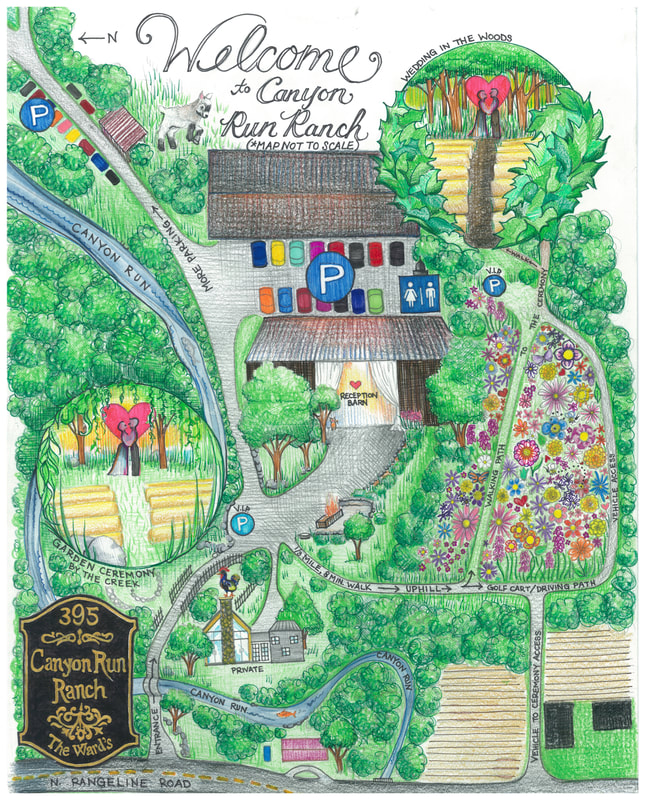

Tid & Sted
Bryllupet vil holdes på Canyon Run Ranch, 395 N Rangeline Rd, Pleasant Hill, OH 45359. Seremonien starter rundt 16:30 på Fredag 30. Juni 2023. Etter seremonien vil det være middag og fest i ett lokale, som er bare en kort gåtur fra seremonien.Antrekk
Vennligst gå formelt kledd. Den gjennnomsnittlige høye temperaturen i Juni/Juli er omtrent 84°F (29°C), så tenk på dette når du velger antrekket ditt. Bruk sko som gjør det mulig med en rolig tur i skogen hvor seremonien vil holdes. Du kommer nok til å angre på høyhelte sko men noen gode sandaletter går nok veldig bra. Det er også golf biler som kan brukes til å transportere de gjestene som trenger litt mer hjelp med å komme seg fra og til seremoni stedet.Transport
Bryllups stedet befinner seg 75 minutter nord for Cincinnati (90 minutter fra Cincinnati flyplass.) Gjester er velkomne til å bruke en sin egne transportmiddler til og fra bryllups stedet, men det er satt opp shuttle busser for dem som ikke har en annen form for transport. Shuttle buss tidene deles på et senere tidspunkt. Vennligst pass på å si ifra på RSVP-en om du ønsker skyss med shuttle buss. Shuttle bussen kjører tilbake til Cincinnati etter feiringen.Mat & Drinks
Rett etter bryllups seremonien blir det forretter og drinks i Milk Bar (første etasje i lokalet) for alle gjester. Når det er tid for middag beveger vi oss til øverste etasje i lokalet hvor det vil serves mat som biff, fjærfe og sjømat. Det vil være en gratis bar i øverste etasjen av lokalet. Pass på at du sier ifra på RSVP-en om du har allergier eller dietter som må tas hensyn til. Om du trenger å legge til mer informasjon etter du har sendt inn RSVP-en så send gjerne en epost til simon@haugland.com med spørsmål eller for å dele viktig informasjon.Gaver
Din tilstedeværelse i bryllupet vårt er den beste gaven vi kan få. Men dersom du ønsker å ære oss med en gave, så er en kontant gave veldig velkommen.
